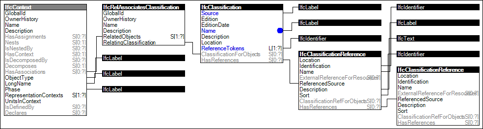

Link to this page
Link to this pageProjects may define classification structures, which may be used to classify objects contained within the same project, or other referencing projects (incorporating the current project as IfcProjectLibrary).
The classification information can either be provided as an external classification reference, only refering to an IfcClassification, that holds the classification name, edition and a resource location, or to an IfcClassification containing the IfcClassificationReference's as the classification notations, and thereby allowing to include the classification system structure within the exchange structure.
Figure 5 illustrates an instance diagram.
 |
Figure 5 — Project Classification Information |